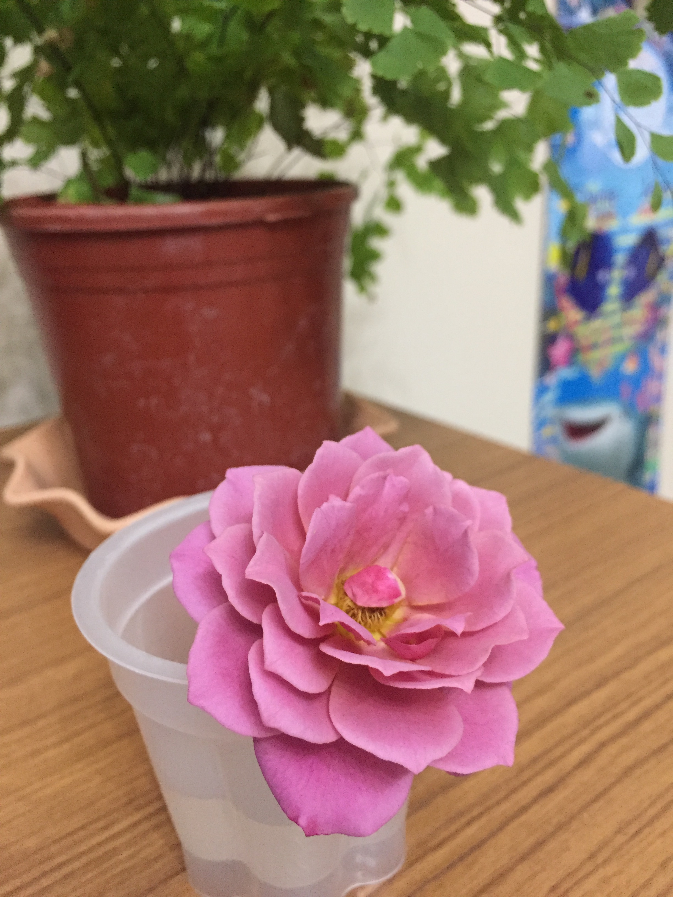
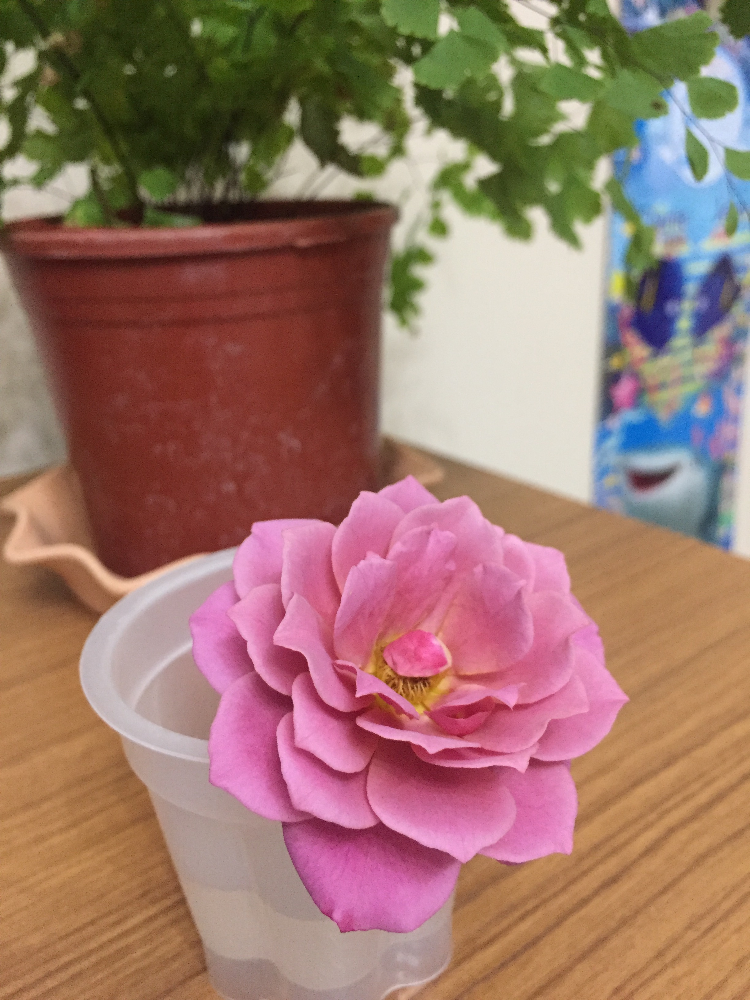

可能是平時壓力太大了，忽然覺得盆栽真的很療癒，就不知不覺開始買進一盆一盆的新成員。最近種了一盆顏色特別的玫瑰，還需要再查一下到底是什麼品種。
據說開花後就切花下來可以讓盆栽內的開得更好，目前實施中 XD

Update your browser to view this website correctly. Update my browser now
可能是平時壓力太大了，忽然覺得盆栽真的很療癒，就不知不覺開始買進一盆一盆的新成員。最近種了一盆顏色特別的玫瑰，還需要再查一下到底是什麼品種。
據說開花後就切花下來可以讓盆栽內的開得更好，目前實施中 XD
